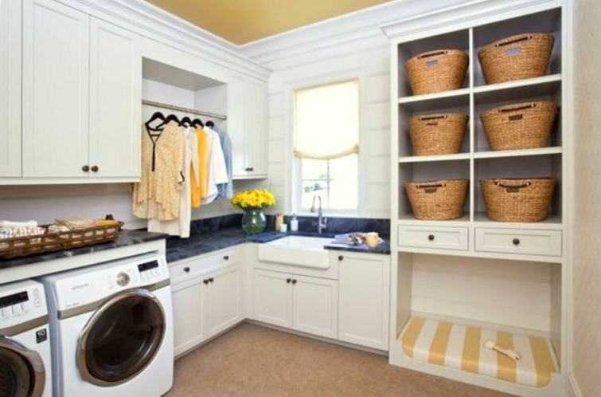
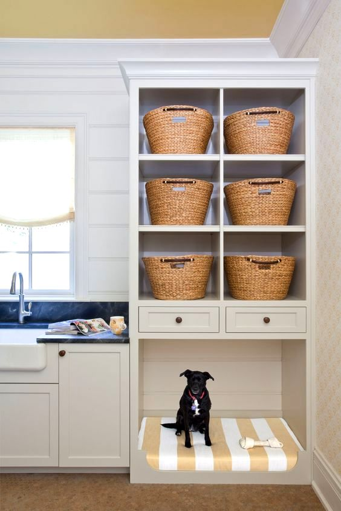
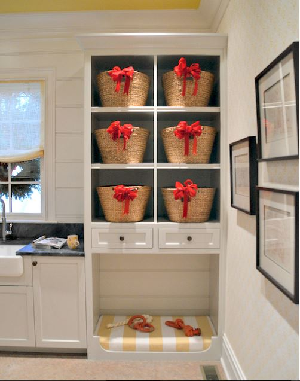

.png)
.PNG)
.PNG)
.PNG)
.PNG)
.PNG)
.JPG)
.JPG)
.PNG)
.PNG)



Welcome back dear friends! For today’s post, I thought we would look at something a little different. It seems that many of us really crave organization in our homes. And since so many of you are pet owners, I’d like to look at a few organized spaces designed for dogs and all the things that come with pet ownership. Even if you do not have a dog (or even like them) there are still some pretty neat spaces to see..starting with the first one at the top of the post. It was created by Harrison Design for an Atlanta Christmas showhouse a few years ago. The built-in area for the dog bed is great – as is the space above it with all the baskets.

Here is that same space decorated for Christmas with an abundance of red bows. (A great idea to use on baskets in your home for the holidays even if you don’t have that many in your laundry room. 🙂 )

Here is another laundry room with space for the dog…this time all in white.

The wallpaper in the following one is precious! But this one is truly a top “luxury model” with a shower space for the dog and feeding station drawers. 🙂

A mudroom in another showhouse, this one in St. Paul, offers a doggie door and another pull out feeding station.

One more mudroom area for you to see with room to feed your pet.

Now let’s take a look at some kitchens that have incorporated features that pamper the pets of the house.
An island cart with a place for feeding…

A built-in feeding station and dog bone shaped drawer cutouts…

A remodeled kitchen with a soapstone lined feeding area…

And an organized area off the kitchen with a marble topped feeding station…

The following one looks like it is in a pantry area off a kitchen.

And then there is this brightly patterned one in red and white with room for the pet feeding supplies.

Now change direction here a bit. Even if you don’t have a pet in the house, you can still appreciate designs that include dog illustrations. Don’t you think they are perfect for a little boy’s bedroom? 🙂


More throw pillows…

And here is some artwork to go along with the printed linens.

Do you remember our son’s one room apartment that he has at law school…the apartment with the dog accessories?
Notice that red lumbar pillow there, the one with the basset hounds. Santa found some Pioneer Woman salt and pepper shakers for our son and put them in his stocking this year. They were just too perfect to resist!

And now, there is one more reason for us to be drooling over doggie decor…
I’d like to introduce you to…
Gabbie. 🙂
 This perky little yellow lab is the newest member of our family. Do you remember how I said in my last post that I planned on 2017 being a slower year? Well, I eat my words. Things have been changing around here!
This perky little yellow lab is the newest member of our family. Do you remember how I said in my last post that I planned on 2017 being a slower year? Well, I eat my words. Things have been changing around here!

You see, Gabbie is our first inside dog.
And yes,
I’ve read and seen Marley and Me.

Marley & Me (Three-Disc Bad Dog Edition) [Blu-ray]
(My Amazon affiliate link.)
Yes, I know labs are notorious for chewing and destroying things, but we are going to try this. (We do have a big yard that can handle a dog if it doesn’t work out inside.) She is currently living in our kitchen and dining area, and we are trying to crate train her. Her favorite napping spot seems to be either on top of anyone’s shoes (with the person still in them) or under the kitchen desk. 🙂

Another big change here is our daughter has decided that working on holidays and weekends isn’t too much fun. So she has left her fun job at Disney and accepted a position with a conference center near here and moved back home with us. We have been working to find space for all of her things here…including having my husband totally redo her closet with all wood shelving. Busy busy place here the last 10 days!
Oh, and one final thing. All of our children and my husband have had smartphones for years, but not me. I have had an old “slider cell phone” for a veeeery long time. I decided last week that it was about time I had a smartphone! So I bit the bullet and bought one. Which means….Instagram, here we come! I would be delighted if you would follow me there where I post more photos from our crazy life. (The link is here.) And Gabbie has her own account as well! (Her link is here.) She’ll be sharing decorating advice along with her cute photos in each of her posts, so I think you will enjoy it. 🙂
Thank you for stopping in for a visit here today to look at all the pet spaces with me.
I hope you have a great week ahead!
Until next time,


.PNG)
Yellow labs are the best dogs on earth. Beau is our third and he was the biggest stinker of the bunch when he was young. We have had labs for over 30 years. They really aren’t that bad about chewing etc. You just have to remember that they are puppies for about three years or in Beau’s case 6!! We have three yellow labs on our circle down at the lake. One is really old, Beau is 6 and the pup is 1 1/2. They all get along and play beautifully together. You are going to love that dog!!!
———————————————————————
How sweet! I had already resigned myself to her “puppy stage” for a couple of years, so you and I are thinking the same thing. I’m glad to know that people survive that looooong puppy stage, and still love their dog afterwards. LOL I am already loving Gabbie! Having an inside dog is QUITE different from having one outdoors.
Kelly
Gabby is adorable! We have two indoor labs (one yellow male, one chocolate female) and we love it! Yes, they shed like crazy and they scatter their bones all over the place but to us it is worth it. They are loving and funny and annoying sometimes. But they are a great comfort to us and a huge addition to our family. We have always had indoor dogs and we find that they are much more responsive and in tune to us than our friends who have outdoor dogs. I think you will see a difference in the way Gabby relates to you. If you can hold out until she settles down…and she will – in time. 🙂 Best wishes to you!
——————————————————————-
Thank you Yolie. I am definitely seeing a difference in having an indoor dog vs. an outdoor one. We are loving having Gabbie as part of our family! It sounds like your dogs are an important part of yours too. I think a lot of the readers here are pet lovers! 🙂
Kelly
Oh Kelly, Gabbie is so cute. You aren’t going to believe this, I have a new 7 week old toy poodle grandog.
We just got Beau on Sunday! I will be keeping him company a lot while his parents work. So it is a win win for me. Enjoy Gabbie and your daughter.
——————————————————————–
Then you are also going through all the puppy training we are! How fun! I bet that puppy is a tiny thing if he is a toy poodle. 🙂 Have fun with your new granddog!
Kelly
Gabbie is a beaut…don’t you just love puppy bellies !
——————————————————————
Thank you Debbie! Puppy bellies and puppy fur. 🙂
Kelly
How wonderful…both Gabbie and your daughter. (I’m at that conference center where she’s working.) When your daughter said today “We have a dog”, and indicated hairs on her black clothing, I wasn’t realizing that it was a new member of your family, though I should have. Hope y’all enjoy the changes that your household if going through. Thanks for sharing such a fun post!
———————————————————————
Hi Bonnie! Thank you for following along with the posts. I told Hayley to use the lint roller before she left…guess she didn’t think it was needed. Ha! We ARE enjoying all our changes around here! Never a dull moment now. 🙂
Enjoy your weekend!
Kelly
Like Patty above, I had a feeling when I started reading your post that there was a dog coming. Enjoy your new pup. Dogs change houses and families, no doubt about it! Nice to have your daughter home. She will have an impact on the household too. Fun times ahead! Look forward to hearing all about it!
——————————————————————
Yes, there was indeed a reason for all the “dog stuff” in the post. You must be good at “reading between the lines.” 🙂 Thank you for visiting the blog today Linda, and thank you for your comment. I hope there are lots of fun times ahead for us with both Gabbie and our daughter.
Hope you are having a good week!
Kelly
I am beyond excited that you will be on Instagram!!!! Welcome, welcome!!!
—————————————————————-
Thank you for the welcome Heather! I still have a lot to learn about it, but I’m working on it. 🙂
Kelly
Hi Kelly,
The puppy is tooooo cute. We have had 2 indoor labs, they were both at least 100 pounds, and the most recent one thinks she is a lap dog. They are the most lovable dogs. We found they did well being crate trained, and still love the crate for a sense of security doing thunder storms. Of course as with all pups, lots of exercise will help. Our first one lived to be 15 and had the heart of a 3 year old. They never seem to grow old. Have fun and Enjoy! She is precious.
Thanks for sharing,
Kay
—————————————————————–
I am glad to know that people survive the puppy stage with a lab! LOL 15 is a looooong time for a dog to live. He must have had a good life. 🙂
Kelly
Love the picture of your sweet dog, Gabbie! Our dog passed away last year and we are just about ready to take the plunge and adopt another one. Good luck as you transition and with her training! I’m thrilled to follow you both on Instagram! Blessings….
——————————————————————-
Thank you Lanita! I am so sorry about your dog. I hope you find one soon. They really do add to your life, don’t they? Thank you for following both of us on Instagram! 🙂
Kelly
Oh how sweet she is! The picture of Gabbie with your daughter is just perfect. Best wishes on all the new changes at your house. May they bring you pure joy.
——————————————————————-
Aw thanks Rachel! I loved that photo too. 🙂 Thank you for the good wishes for us!
Kelly
Hi Kelly, hope you’re having a great 2017. I’m happy your daughter is back home. Life’s way too short to not be happy. Working weekends & holidays (unless absolutely necessary ) just doesn’t make for a great life. Good luck to her!
Congratulations on your new puppy. She’s precious. I just hope you didn’t buy her from a breeder. There are too many wonderful dogs & puppies in shelters who deserve a forever home. We have 5 rescue dogs and they make the most loving & appreciative pets (family members )
Any more thoughts on the lake house?
—————————————————————–
Thank you Lisa. We had been looking for a dog since October. We were insistent that it be a female lab puppy – not necessarily full lab, just one that you could tell was mostly lab. I had checked Petfinder ads and Craigslist listings for everywhere in the state of Georgia and even parts of Alabama, Florida, and North Carolina. I really wanted a shelter pet because of the reasons you named, plus they would already be spayed. But every time we would find one, it was gone before we could get her. Puppies go very fast in shelters around here! I thought I had finally found our puppy at a shelter in Birmingham, but that was the weekend of the winter snow storm, and she was gone before we could make the long 4 hour drive there. So after 3 1/2 months of looking I gave up looking and we decided to finally go with a breeder. Even at that, we had to drive almost 3 hours away to get her! This has been a long hunt, but we are glad that Gabbie has made her home here. How wonderful that you have 5 rescue dogs. My sister has had 3 as well.
No plans for a lake house at this point…but we are definitely looking!
Kelly
Oh, I forgot to say how happy I am for you to have your daughter home!!! She is beautiful just like you. Enjoy your time with her!
——————————————————————-
Thank you for your sweet comment. 🙂 We are so happy to have our daughter back with us from Disney. It makes a world of difference having her here!
Kelly
Another great post! My son-in-law came with a yellow lab and she is a beautiful dog. I don’t tell many people this but I am not a dog person because I was bitten as a child and could just never get over it. I did allow our kids to have an outside dog. And, I like dog items and even have a shirt with dogs on it. (DiAnne recently told me she likes the shirt but it is just “not me”.)I think I have come a long way in that I can wear that shirt and enjoy this post!
———————————————————————
As I was writing this, I knew about your history with dogs. I know not everyone likes them for one reason or another – and you certainly have a good reason! I am proud that you were able to have an outside dog at your home. That was very brave of you Kathy! Yes, you have come a long way. 🙂
Kelly
I had a feeling when I started reading your post that there was a dog coming. Gabbie is so adorable. What a wonderful addition to your family!! Having your daughter home is another blessing I’m sure. I have only had a smart phone for about a year. I have to say I sometimes miss my old phone. I am on this one way too much. I’ll be sure to follow you on Instagram! Looking forward to lots of pics of Gabbie!
—————————————————————–
Oh you are a smart one Patty! Yes, a dog was coming. 🙂 I totally understand what you are saying about missing your old phone because it seems that the new is so time consuming. Thank you for the follow on Instagram. Still learning how to do it!
Kelly
Gabbie is gorgeous. My grandma had golden labs, and they are such sweet natured dogs. Sometimes a bit excitable for the first couple of years, but then very mellow and happy. Which can only be a good thing. 🙂 Daughter home, new puppy… It sounds as though 2017 is off to an ideal start!
——————————————————————–
Gabbie says thank you for your compliments, Frances! We are hoping she will mellow as she gets older as you’ve said. Yes, 2017 is off to a very good (but busy!) start! 🙂
Hope you are having a good week! 🙂
Kelly
She’s a sweetie! So much fun things happening at your house!
——————————————————————–
That she is! It’s a very busy place around here lately!
Kelly
Hey Kelly, I’m so envious of your puppy. She’s adorable! AND I’m happy your daughter’s going to be there to help with the training! Good luck…Love, Julia
———————————————————————
Ha ha! Thank you for Gabbie’s compliments. We are loving having our daughter here, and she is a big help with the training. 🙂
Kelly
What an exciting beginning to 2017! Can’t wait to read the stories. Happy days….and such a cute pup.
——————————————————————-
It has been an exciting start to the year! Thank you for reading the post and taking the time to comment Bev!
Kelly
Congratulations! We have had dogs for as long as we’ve had kids and love the joy they’ve brought our family. There will be times while Gabbie as a puppy, will try your patience but dogs are so worth the time you spend training them. It’s so nice you have your daughter home to help a bit with the training.
xo,
Karen
——————————————————————
Yes, a puppy can try your patience…it is like having a new baby in the house! (without a diaper! LOL) Dogs become part of your family as you well know. Our daughter is helping with the training, so that is a good thing too. 🙂
Kelly
Kelly!
I am so excited to meet Gabbie! She is adorable! We have a boxer, Cabo and he is also an inside dog. I am so happy for you guys to get another dog. I adore dogs!
I am happy for your daughter to have returned as well. I hope all was a learning experience for her and the new job will work out. Best wishes to her.
Thanks for sharing! Take care.
Dawn
———————————————————————-
I just love reading your happy comment Dawn! Thank you for all the compliments on Gabbie. She is a cutie and fun for us to be around. And we too are thrilled to have our daughter back home. She is loving her job!
Thank you for visiting the blog today. 🙂
Kelly
I know you must be so happy to have your daughter back under your roof! And we had a yellow lab (outside unless it got bitter cold) and he was so good natured and easy to train. When hubs would be out working on a project, he would sneak up and carry off a tool, or a glove….He was my son’s dog and now my son says that’s the first thing he will do when he graduates from law school-get another lab (mom was kind of hoping for a bride;)
——————————————————————-
We are VERY glad to have our daughter home. 🙂 Too funny about the tools! A bride…LOL well at least he is a dog lover at heart.
Kelly
Such a sweet puppy! Our Angel, yellow Lab, was the love of my life and our first dog, as a married couple. She was very destructive until we learned about crate training. Labs need lots of exercise too. She passed away at 14 years old. Still miss her so much. We have two other dogs now, my MIL’s rescued Shih Tzu, Buddy who came to live with us when she passed away in 2007 – he’s 15 now, we think. My husband found our little bull dog mix running in traffic in front of his office about 3 years ago. They are my loves now. Be patient and good luck with Gabbie!
——————————————————————-
I am so sorry about Angel. That is like losing a family member. It sound like you have a full house with your dogs now. 🙂 We are being patient with Gabbie and working daily on her training. Thank you for the well wishes! 🙂
Kelly
Oh Kelly!!! How sweet Gabbie is!!! And your daughter coming home! How exciting! She will be a big help in raising Gabbie too!! I’m sure she is so happy to be home! Our pups always ended up loving their crate…in fact, when it came time to put it away, they missed it! Enjoy all the excitement around there! Believe me – it doesn’t last forever!!! Ha!! So anxious to keep “track” of both of you on instagram!!!! 🙂
—————————————————————–
Yes, we would not have taken on a puppy if our daughter had not been here to share in the responsibilities. She is a big help and loves that puppy to death! We are working on Gabbie’s crate training…long way to go. But I know she will soon learn. Thank you for checking out both accounts on Instagram Susan!
Kelly
Awww, she is so adorable!! There’s nothing like a puppy! One of my miniature schnauzers is named Gabby!! 😀 How exciting for your daughter to be back home too!! Haha, I still have an old slider too…one that isn’t used much, but thankfully I can follow Instagram via computer. Such a wealth of inspiration there and I’m happy you’re posting now!!
—————————————————————–
Great name! LOL Like you, I had been following instagram on my computer, but could not post photos. With the new phone, I am now able to do that, so this is a fun new world for me! (Lots to learn for me!) Trade in the slider so you can jump in the action too. 🙂
Kelly
Oh my gosh!! What a cutie! Check out the Monks of New Skete “The Art of Raising a Puppy”. Our breeder recommended this book when we got our german shepherd puppy years ago. Good luck and enjoy your new puppy, and having your girl back home!!
——————————————————————–
Thank you Lisa! We have had that book recommended several times to us so we will have to check it out.
Kelly
Gabbie looks charming. She will enhance your life in ways you can’t imagine. I have 4 fabulous cocker spaniels, and each is unique and wonderful. As I too, am retired, they fill my days! Good idea to crate train – it makes your life easier, and her life more secure. It also allows you to take her almost everywhere you go, safely. I have wire crates for the house, and travel crates for the car. Life around here is like a 4 ring circus! Enjoy!
——————————————————————-
I don’t know what we would do with 4 dogs! Oh my! But at least they entertain each other. 🙂 We are trying the crate training with a wire crate for Gabbie. It is definitely the plan because she will not have full run of the house (hope I am not eating those words! LOL)
Kelly
Oh my gosh she is SUCH A BEAUTIFUL PUP! This is funny as I was just thinking I need to use Minwax again today on the bottom of our coffee table where Chief has chewed it. Ha! Anyway, we had a yellow lab that was the most loving, loyal dog ever. GOOD decision. Happy New Year!
Mary Ann
—————————————————————–
Oh my goodness, thank you Mary Ann! Glad to know this is a good decision. I wanted a beagle- something smaller, but my husband has insisted that a lab will be a very good choice. I’ll be sure to get some Minwax too (if there is not some already in the closet with all the paints.)
Thank you for stopping by the blog for a visit. 🙂
Kelly
Goodness, Kelly – your January has been busy! Gabbie is darling. I am excited for you especially to have your daughter home again!! Our oldest son moved back home after living in CA and it was such a delight to have him with us as a young adult. I’ve treasured that time always.
——————————————————————–
Yes, it HAS been a busy month, Barbara, and we are only half-way through it!! It seems that children are returning home more frequently these days…must have something to do with the economy I suppose. Paychecks don’t seem to go as far as they once did. 🙁
Kelly
Gabbie is absolutely adorable. She is going to bring you great joy! If you go out of town and need a sitter, the Witt house is close by and I would be glad to keep Gabbie. Please know they chew as they are teething a lot. They do chew and dig for the first 2.5 years on average. Gabbie lays on your feet to feel secure and safe. Gabbie is irresistible. I wouldn’t be able to get anything done for wanting to hold her. Enjoy!!!
——————————————————————-
I will keep your dog sitting offer in mind Pat. Thank you! We know they chew A LOT and are prepared for it…or at least as prepared mentally as we can be. LOL She is a sweet little puppy right now…but know they grow soooo fast.
Kelly
Oh what a sweetie. We had a chocolate lab when I was growing up that chewed everything including the bumper of our truck!He was the sweetest boy and very intelligent. They really enjoy having a stuffed animal of their own. We now have two very smart boxer babies – female – 12 and male – 4. A house is not a home without a wiggle but. Life won’t slow down, but having a dog will keep you young.
———————————————————————
The bumper of your truck?! Oh my! Glad to know a dog will keep us young. They certainly keep us busy! 🙂
Kelly
What great ideas!! Love that your daughter is home and Gabby is home!! I remember her beagle and wondered if you would have another dog when the time was right. Know your whole family will love this puppy!! Crate training is a very good idea. We built in an open grate/ pen area that our Yorkie sleeps in and where we put her when we are out because she can’t have free range. She loves it and knows it is her safe place. We built a picket fence with a gate opening which matches our cabinets and other bead board trim. Really cute! Best of wishes to Hayley in her new position/ career and enjoy Gabby! 💕🐶💕
——————————————————————-
Sounds like your Holly Berry has a cute little place to call her home! We are trying crate training but have a long way to go. Patience, I know patience. 🙂 She really seems to love the spot under the kitchen desk the best…it is like a den for her.
Hayley is enjoying her new job…and I am sure she will enjoy that paycheck! 🙂
Kelly
Your new puppy is darling enjoy her she will bring you so much happiness! I would suggest a good ol Elk antler for chewing my dog has three of them!
———————————————————————-
Thank you for the suggestion Chris. We don’t have one of those currently, but I will pick up one when I make another run to the store!
Kelly
Your Gabby is adorable and you’re going to have so much fun with her. Keep posting her antics, we’ll love them! Congratulations to your daughter for deciding to get closer to home! Everybody benefits!!
——————————————————————-
Thank you Anita! I hope Gabbie’s antics are not too frequent (although I should have filmed when she “discovered” the water bowl as a play toy!)
Kelly
Gabbie is just beautiful! I have a grand dog Lab who is very well behaved but you may want to stock up on lint rollers.
Loved the pictures in this post. The rooms were pretty and you and your daughter look more like gorgeous twins than mother / daughter!
——————————————————————–
I have definitely stocked up on the lint rollers – 4 in the house right now! (And I have been using them frequently on my black clothing.) Thank you for your sweet comment on the photos, Katrina. (Although my daughter doesn’t think it is a compliment to look like me – but hey, I am glad to look like her! LOL)
Kelly
Kelly ,
What a great start for a new year ! Your daughter is back home and a new puppy!
Gabble is adorable and she might be just the reason to start instagram !
I loved all of the dog inspired posts . Dogs are such a delightful addition to a family .
——————————————————————-
Dogs really seem to make a house a home, don’t they? (Even if it is a messy home! LOL) We think 2017 has started out great. Hope it continues that way! I’m so glad you liked all the dog inspired spaces. I am seriously considering that dog print wallpaper for somewhere around here…maybe the children’s bathroom. 🙂
Kelly
Kelly and Gabbie: Congratulations to you all! 2017 is already starting to be a special year at your home. I wish your daughter the best in her new venture; I’m sure its nice having her back home. Cindy
——————————————————————-
Thank you Cindy. It is very nice having our daughter back home!
Kelly
Gabbie is adorable! And your daughter moved back? Wow…lots going on at your place too. One of my sons moved back home in October…and we had to make room for some of his stuff…the rest is in storage. It’s quite the transition isn’t it? But we are happy to have him temporarily home! Have fun making room….and enjoy your new addition! I imagine lots of ‘puppy cuddling’ going on! 😉
——————————————————————-
It IS a transition…both with the puppy AND with our daughter! Like you, we are happy to have both our dog and child here. 🙂 Tons of puppy cuddling going on. 🙂 I’m told they grow so fast, we better enjoy it while we can.
Kelly
Gabbie is adorable. I can’t wait to hear more about her. I am a dog lover. I love all the dog feeding stations as well.
——————————————————————
Thank you for Gabbie’s compliment Sandy! I’ll be sure to share her antics here on the blog. It seems there are quite a few dog lovers here!
Kelly
A yellow lab is one of the dogs we’re considering…my sister’s family has had labs for years and loves them….your Gabbie is precious.
Soooo happy you’re FINALLY on Instagram! I’ve more or less abandoned my blog (after 9 years) and love IG.
Have a great week Kelly!
—————————————————————-
I understand that labs are loyal and fun family pets…if you can just get through the puppy stage. I am worried about how big she will get, but my husband assures me that it won’t be a problem. (We’ll see….) Instagram seems to be “the thing” and it is certainly easier and less time consuming than a blog. Totally understand why you would want it over blogging!
Kelly
Your home, style, creativity is so inspiring. Love all of your decorating, organizing, party ideas. Congrats on Gabbie – one piece of advice: find a great vacuum to suck up all of her dog hair. Our chocolate lab sheds so much that a vacuum lasts about a year in our house. We do love him though!
———————————————————————–
Thank you for your compliments Robin. I do have a Dyson vacuum cleaner and hope that will handle all the dog hair…might wear that one out and have to get a new one too!
Kelly
Gabbiethelabbie – love it! She looks sooo precious, but I bet she can be mischievous too. And joy, your daughter back home, how great! Lots of change indeed! Did you know at Christmas that all this was going to happen?
I love how people have incorporated pet areas for their special ones. We are pet-less for the first time,and have been for 2 yrs., but we hope to change that come spring. And ours have always been inside pets. Never understood having a pet that remained cut off from the family. Why have one at all? I hope you have many fun years with Gabbie, and I know you love having your daughter back! Following on instagram, but I don’t know how it works yet! I too have a slider phone, because hubs doesn’t want higher phone bills.
———————————————————————
We had been looking for a puppy for months. I have been through every Petfinder ad for puppies at shelters and every Craigslist in Georgia listing for puppies since late October. Every time I would find one at a shelter they would be gone before we could get them. So yes, in a sense, we knew we were getting a dog….just didn’t know when. 🙂 Our daughter had decided to go back to school, so we knew she would be moving home in January, but then this wonderful job opportunity came through for her. We were thrilled that she decided to accept it!
We had been petless for about 3 1/2 years, so I understand that. All of ours had been outside dogs though before this…we were both working and unable to come home to check on them during the day..so outside was the only way to go for us at that time. Thank you for the follow on Instagram. I am learning about it too!
Kelly
So much excitement in your house! Please keep us updated on Gabbie — we are considering getting a dog for the first time ever and I’d love to hear how it is going for someone else.
—————————————————————–
Yes, it is exciting Kim! I am sure if/when there are stories with Gabbie they will make their way to the blog!
Kelly
Love this post. And especially the adorably cute Gabbie. In November 2016, I also went from an old basic cellphone to my brother’s donated Apple Iphone 5S (he was bothered that I was so out of touch and technologically unsavvy!). Happy Monday.
——————————————————————-
Glad to know I am not the only one late to the smartphone party! Right now I am enjoying it, but it certainly seems more time consuming to me with all the things you can do with it.
Kelly
Congratulations on the newest addition to your family! We have a yellow lab, Teddy, and he is my third child. Gabbie is adorable! Enjoy! Congratulations on your new phone. I am also on Instagram and will definitely follow you. Best wishes for a wonderful week ahead! 🙂
———————————————————————–
I can quickly see how your puppy becomes your third child. Guess that makes Gabbie our fourth! Thank you for the follow Lynne. I am learning my way around Insta as I go…have already had to delete one photo because I put it on the blog account when it was supposed to be on Gabbie’s. (What crazy person starts off on Instagram with two accounts when they haven’t even learned about one?? me. 🙁 )
Kelly
Love your sweet lab…hope all goes well. A dog and a child moving back home…oh me that is a lot of change at one time Kelly! Just followed you on Instagram!!
———————————————————————-
Yes, it is A LOT of change here! Quite a bit of action all the time now! Thank you for the comment and the follow on Insta, Arlene! 🙂
Kelly
Gabbie is sure a cute addition to your family and I am sure she will be “spoiled.” I love all the “dog feeding” areas but the ones that pull out would have to stay out all the time at our house so the pups could get to the water. I have seen some of these and thought hubby should make that for our 3 pups but the water has always but a stop to that. Good idea though. Glad you are back.
——————————————————————-
You are right about that Cheri. Our water bowl for Gabbie is in a different location from her food…so we could possibly put her food bowl in one of those pull out drawers (but shoot, I would rather have the drawer space! LOL) Thank you for the compliment on Gabbie.
Kelly
Loving all your photos and happy news, but especially excited about your Instagram page! Following you now and can’t wait to see all your gorgeous home photos! Gabbie is one lucky dog!
——————————————————————-
Thank you for the sweet comment Leslie Anne. Followed you back on Insta, you big world traveler. Glad you made it back safely to the good ol USA! 🙂
Kelly
She is so cute! Bailey is our first inside dog, too, but you are much braver than me with a large dog. Bailey chewed window trim and anything else she could ruin. Get something else for her to chew on before the house gets destroyed!
———————————————————————-
Bailey is precious! And we seriously thought about naming her Bailey. I am not really brave. I wanted a beagle…a teacup one at that. My husband is the one who wanted the lab. (Trying to be a good wife here. 🙂 ) We have been warned about all the chewing so we have quite an assortment of chew toys around here.
Kelly
Gabbie is too cute! What a happy addition to your family! Congratulations!
————————————————————————–
Thank you Anne! We appreciate your congratulations. 🙂
Kelly
Kelly, how absolutely exciting! Welcome to a dog’s life! Gabbie will enhance your life in more ways than you can imagine. Is this your first dog? Beautiful photo of both you and Hayley. So wonderful that your daughter is now so much closer to home, I hope she enjoys her new position. You must be thrilled to bits. Looking forward to all your Instagram updates. Already signed up to follow!
———————————————————————-
Thank you Tricia! No this is not our first dog. We had beagles for years, but Gabbie is our first one to live inside the house…lots of adjusting here! And we are thrilled to have Hayley home with us too. Just hope we can find enough space for all her stuff!!
Thank you for reading the blog and for following on Instagram!
Kelly
OMG, what a cute puppy!!!
My girls might actually consider kicking our two cats out for a dog like Gabbie (but they wouldn’t do it in the end). With a dog you at least have a chance of training her to stay away of certain things. I wish you all lots of fun with the new part of the family!
And all the best to your daughter and her new job! That’s always an exiting step.
And all the best for you and your family for 2017!
—————————————————————-
Too funny about the cats Michele! Thank you for all the well wishes you are sending my way. All the best for you in 2017 too!
Kelly
Welcome to Gabbie! She’s so gorgeous and has chosen such a great family to be a part of! I love her name too ..It really suits her!
If we ever have a dog I’d choose a lab they have lovely temperaments …perfect family dog.
Welcome home to your daughter too, hope shes really happy in her new job. In your position I would be one happy mama ..great start to 2017 🙂
You’ve shown some very inventive designs for dog friendly homes…Some people have great design ideas ..love the bedding and cushions too.
Sure you’ll be having a great week!
Rosemary
—————————————————————–
Thank you so much for all your kind words Rosemary! We are having a good week. The rains start tomorrow, so I am a little worried how taking our dog outside is going to be with that. Hope your week is going great as well!
Kelly
Gabbie you are just beautiful. Welcome to your new family member Kelly.
—————————————————————–
Thank you Gabrielle! We started to formally name her Gabrielle and then call her Gabbie, but decided just to take the easy way out with one name.:)
Kelly
Kelly,
Gabbie is adorable!We are huge fans of yellow labs in our family. I hope Gabbie is easily trainable and that you will thoroughly enjoy the puppy stage that goes by so quickly. I loved all the kitchen and laundry room dog accommodations…that would be mandatory in my dream home! Thanks for sharing such a fun post!
——————————————————————-
Thank you Gracia! It is like having a new baby in the house! Yikes! We are working on the training, and hopefully she will pick up on things soon. Glad you liked all the dog accommodations. Thank you for visiting the blog.
Kelly